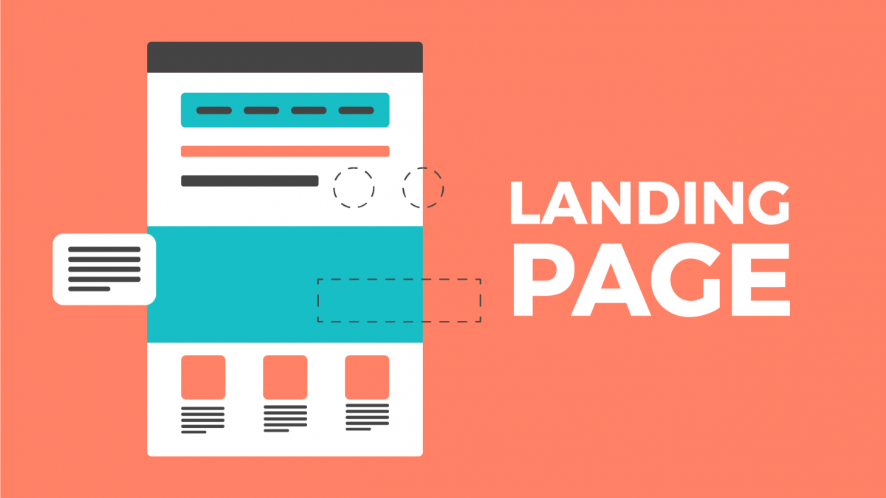

Una landing page (página de inicio)
es la página web a la que se dirige a un usuario de Internet después de hacer clic en un hipervínculo
(ya sea que ese enlace sea una publicidad, un enlace en un correo electrónico o boletín,
un botón de llamada a la acción u otros…).

Con frecuencia se utilizan landing pages (páginas de inicio) específicas para campañas promocionales
y de correo electrónico, así como por el marketing en buscadores y SEO. De hecho, una landing page
(página de inicio) puede ser muy eficaz para llevar a los usuarios directamente a la información que
están buscando y al contenido que les interesa.
Referencia: https://www.atinternet.com/es/glosario/landing-page/